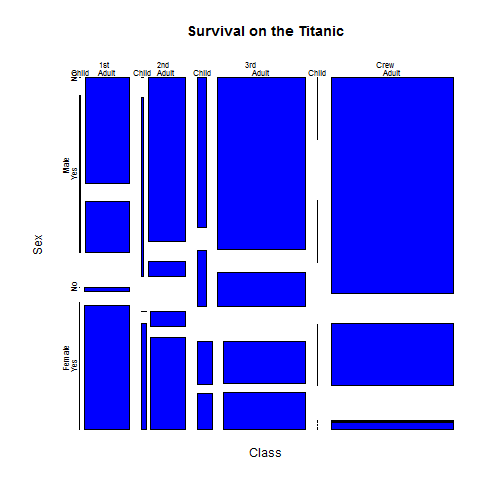

Titanic Disaster
- The Titanic struck an iceburg at 23:40 on Sunday, April 14, 1912
- There were 3547 passengers and crew
Kristy Wedel
mosaicplot(Titanic, main = "Survival on the Titanic", color = "blue")

library(shiny)
data(Titanic) df <- as.data.frame(Titanic)
shinyServer( function(input, output) { output$plot1 <- renderPlot({
selectedData <- df[df$Class==input$inClass & df$Sex==input$inGender & df$Age==input$inAge,5]
titanicplot <- barplot(selectedData,
main="Titanic Survival Stats",
ylab="Total #",
col=c("darkorchid1", "darkolivegreen3"),
legend = c("Fatalities", "Survivors")
)
})
})
Explore the data with the Shiny application located at: Titanic Shiny App